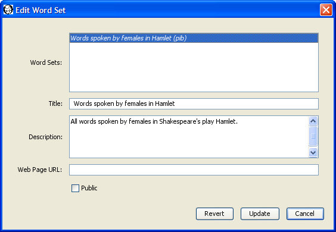

|
|
|
To create a word set you must first login so that the Sets menu becomes available. Not all installations of WordHoard allow you to login. You will not be able to create word sets on such systems.
You may also edit or delete word sets as well as see a description of the data associated with a word set.
WordHoard provides two different methods for creating a word set. The first is to select the New Word Set dialog. The second is to use the results of an ad-hoc word query.
Let's create a word set using the New Word Set dialog. Select "Sets, Word, New Word Set" to display the dialog.
Our sample word set will contain all the words spoken by women in Hamlet. We fill in the dialog fields as follows.
You must enter a title for the word set. The title is a required field. Each of your word sets must have a distinct title. Someone else may use the same title for a word set. The different account name will distinguish the otherwise identically named word sets. We'll use "Words spoken by females in Hamlet" as the title for our word set.
You may enter an optional description of the word set.
You may enter an optional web page URL where more information about the word set may be found. It is up to you to create that web page.
A word set may be public or private. A public word set may be viewed and used by any WordHoard user. A private word set may be viewed and used only by the creator, and only when the creator is logged in. Word sets are private by default. Select the check box before Public to make the word set public.
Select the texts from which the words will come. We only want words from Hamlet, so that's the text we choose.
Select the saved word query to use to gather the words for the word set. The query will be run against the texts you selected above. If no existing saved query matches your requirements, you can create a new one. Alternatively, you can use the results of an ad-hoc query to create the word set. We choose the existing saved word query "Words spoken by females."
Press the "Create" button to create the word set. WordHoard displays a progress window while the word set is being saved. You can press the "Cancel" button to stop the save process. If any errors occur, WordHoard displays an error message in red in the progress window. If the word set is successfully saved, WordHoard displays a message in green telling how long the creation process took. Creating a word set with thousands of words may take several minutes. Please be patient. Press the "Close" button to dismiss the progress window.
If you are logged in, you can save the results of a word query created using the Lemma Search facility to a word set. Select "Find Lemmata" from the "Find" menu to display the Lemma Search window.
Add Shakespeare as the corpus and female as the speaker gender using the "Add any of the following criteria" controls. You cannot restrict the search to a specific work using those controls, so drag in "Hamlet, Prince of Denmark" as the work from the Table of Contents window. Press "Search" to find the matching words.
Once the search completes, select "Save as word set" from the "File" menu. This brings up the Save Word Set dialog.
Select a title for the word set and set any of the other fields as you desire. Press the "Create" button to create the word set. WordHoard displays a progress window while the word set is being saved.
You can edit word sets you create in two ways. The first is to select "Sets, Word, Edit Word Set" from the menu. The edit word set dialog appears.
The top panel of the dialog lists the word sets which you are allowed to edit. You can only edit public or private word sets which you have created. You cannot edit word sets belonging to others. Select the word set you wish to edit. The remaining fields in the dialog change to reflect the current values in the selected word set. For example, select our "Words spoken by females in Hamlet" word set. The title, description, web page, and public flag for that word set now appear in the dialog.

You can change the title, description, web page URL, and public flag by entering new values. Press the "Update" button to save any changes you make.
You cannot change the word list contained in the word set using Edit Word Set. If you want to change the words in a word set, you should delete or rename the existing word set, and create a new word set with the revised word list.
You may delete one or more of the word sets you have created by selecting "Sets, Word, Delete Word Set" from the menu. The Delete Word Sets dialog appears with the names of your word sets. If you have not created any word sets, WordHoard displays a message to that effect instead.
Select the check box next to each word set you want to delete so that a check mark appears in the box. In the sample dialog above the only word set available for deletion is "Words spoken by females in Hamlet." We have selected that word set for deletion by toggling the check box next to it. Press the Delete button to delete the selected word sets.
Please be careful. Once you delete a word set, it cannot be recovered. You will need to recreate the word set if you want to use it again.
You may see a brief summary of the data associated with a word set by selecting "Sets, Word, Describe Word Set" from the menu.
Select the word set whose description you want and press the Describe button. Let's select "Words spoken by females in Hamlet."
In addition to the fields entered when the word set was created, the description includes the creation and last modification time, the account name for the word set's owner, and the total number of words, works, and work parts contained in the word set.
|
|
|